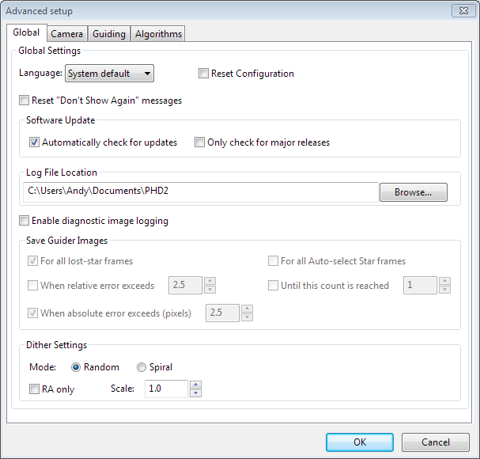
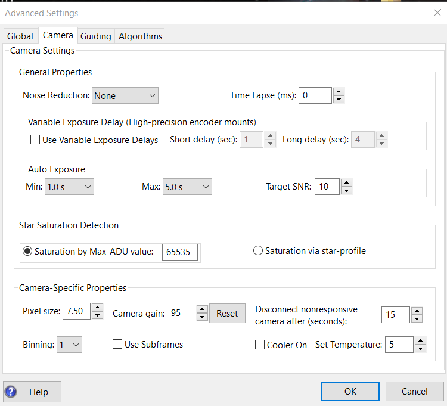
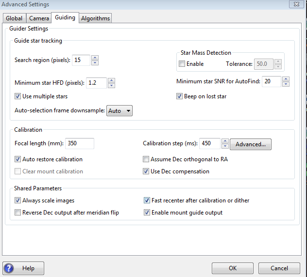
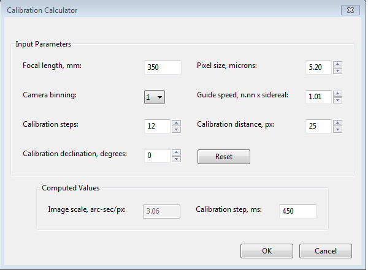
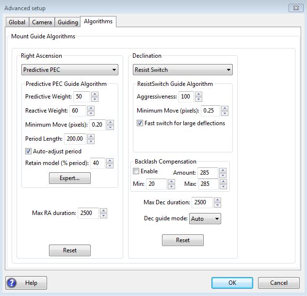
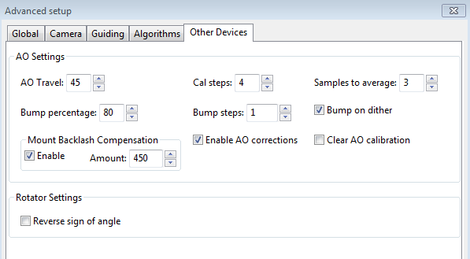
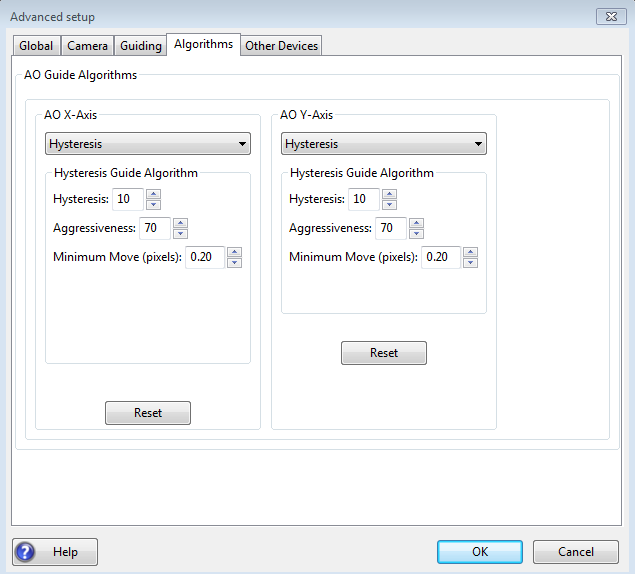

高级设置
点击主窗口中的“大脑”按钮即可打开高级设置。PHD2提供了许多可调整参数，用于优化导星效果。虽然它们称为“高级”设置，但并不难理解，而且某些情况下确实需要修改。对话框中的每个字段都有“工具提示”，以小提示窗口进一步解释该字段。只需将鼠标停留在字段上方即可查看。很多情况下，提示已经包含了所需信息。由于参数较多，PHD2的高级设置对话框采用多个选项卡组织，点击标签即可切换。所有选项卡共用底部的“确定”和“取消”按钮。点击“确定”会应用所有选项卡中修改过的设置；点击“取消”则放弃全部修改。
全局选项卡
相机选项卡
导星选项卡
算法选项卡
其他设备选项卡
全局选项卡

“全局”选项卡各控件的工具提示已有详细说明，下面再汇总介绍：
- '语言（Language）——决定PHD2用户界面使用的语言，可选范围取决于已有翻译。修改后需要重启程序。
- '重置配置（Reset Configuration）——把所有设置恢复为初始值，如同刚安装PHD2一样。
- '重置“不再显示”消息（Reset Don't Show Again messages）——恢复显示以前选择不再显示的警告消息。
- 软件更新
- 自动检查更新（Automatically check for updates）——允许PHD2在启动时检查软件更新。如果没有互联网连接，会推迟到下次运行 PHD2 时再检查。
- 仅检查主要版本（Only check for major releases）——检查更新时不包含开发版本。
有关软件更新的详细说明，请参阅对应章节，其中介绍了PHD2的更新机制。- '日志文件位置（Log File Location）——指定 PHD2 导星日志、调试日志和诊断图像的保存目录。Windows 下默认为当前登录用户的“我的文档”文件夹。
- 抖动设置
- “随机模式”（Random mode）——PHD2 使用随机数计算抖动的幅度和方向，同时遵守“仅赤经抖动”或赤纬导星模式设为“关闭”时的限制。
- “螺旋模式”（Spiral mode）——PHD2 按顺时针螺旋轨迹，以固定步长抖动。如果主相机具有明显的固定图样噪声，或赤道仪赤纬回差较大，这种模式可能更合适。
- '仅赤经抖动（Dither RA only）——让 PHD2 只沿赤经 RA 轴抖动。
- '抖动比例（Dither scale）——可选的倍率，用于缩放拍摄软件指定的最大抖动幅度。参见抖动操作
- “启用诊断图像记录”（Enable diagnostic image logging）——主要用于技术支持，以及诊断导星相机或 PHD2 星点识别、测量方面的问题。程序依据此组控件中的筛选和触发条件，将导星图像以 FITS 格式保存。图像位于 PHD2 日志目录的子文件夹中，子文件夹名称包含日期和时间。例如，“PHD2_CameraFrames_2022-03-03-184542”表示记录从当地时间 2022 年 3 月 3 日 18:45:42 开始。每张导星图像的文件名注明采集时间及保存原因。由于采用 FITS 格式，文件头还包含曝光时间等有用信息。这项功能主要用于故障排查，因此图像子文件夹会在 30 天后自动删除。如果希望长期保留，应重命名这些子文件夹，或将其复制、移动到其他目录。当丢星、大幅误差等“事件”触发记录时，会保存一组图像（一个图像集），在时间上以触发事件的那一帧为中心。这样就能查看异常发生前后导星星点和整个画面的状况。各种触发与筛选控件说明如下，其工具提示也包含相同信息：
- “所有丢星帧”（All lost star frames）——记录所有丢星事件的图像集，不论丢星原因是信噪比过低、星点总量变化还是其他问题。
- “所有自动选星帧”（All auto-select star frames）——记录所有用于自动选星的图像集，不论选星成功与否。注意，自动选星失败时，无论界面中怎样设置，都始终会保存诊断图像。
- “当相对误差超过”（When relative error exceeds）——当前帧星点偏差超过滑动平均误差的指定倍数时，记录图像集。倍数由旁边的数字框设置。例如平均均方根（RMS）误差为 0.5 像素，当前帧误差为 1.5 像素，则相对误差为 3。
- “当绝对误差超过”（When absolute error exceeds）——星点偏差超过旁边数字框指定的像素数时，记录图像集。
- “直到达到此数量”（Until this count is reached）——持续记录图像，直到数量达到旁边数字框指定的值。达到上限后计数器会归零。
图像采用通用标准格式保存，许多天文软件都能显示或分析，其中很多是免费的。多数图像采集、处理软件都支持 FITS，还有一些专门工具能详细测量星点及整个视场的光学质量。可以在网上搜索适合自己操作系统、支持 FITS 格式的软件。如果只是想检查对焦或相机图像的整体质量，也可以直接使用 PHD2。让 PHD2 保持空闲，既不循环曝光也不导星，然后将保存的 FITS 图像拖放到主窗口，窗口就会显示该图像。PHD2 无需连接任何硬件。你可以调整伽马滑块、手动或自动选星，并使用“星点轮廓”工具查看所选星点的 HFD 和亮度轮廓。
相机选项卡

“相机”选项卡中的控件用途如下：
- '降噪（Noise reduction）——指定处理高噪声导星图像的算法，适用于暗场仍不足以消除噪声的情况。选项包括无、2×2 均值和 3×3 中值。后两者都能明显降低噪声，3×3 中值对热像素尤其有效，两种方法都不会明显影响导星精度。不过，建立坏像素图通常是更好的方案，对检测暗星能力的影响更小。
- '曝光间隔（Time lapse）——在导星曝光之间插入固定延时。如果曝光很短，又不希望过高的通信频率使赤道仪或相机连接负荷过重，可以使用此设置。
- 可变曝光延时（Variable Exposure Delay）——高精度或带编码器的赤道仪通常更适合保守的自动导星。这可能包括中长曝光（4 秒以上），以及导星相机曝光之间的额外延时。目标是建立较慢的导星节奏，只修正尚未被赤道仪编码器或指向模型处理的跟踪变化。具体方法见：可变延时导星可变曝光延时控件能实现上述目标，同时避免在正常科学拍摄所需的“稳定导星”以外的操作中引入不必要的等待。
- “使用可变曝光延时”（Use Variable Exposure Delays）——启用此功能。
- 短延时（秒）——设置 PHD2 在循环曝光、选星、校准、抖动及稳定等待，或运行导星助手时采用的曝光延时。某些赤道仪需要非零值，以便给编码器留出足够时间完成位置调整。
- 长延时（秒）——设置 PHD2 正在导星且不处于上述其他状态时的曝光延时。这个延时实际定义的是：最后一条导星命令（如有）完成后，到下一次相机曝光开始前的时间。
- 无论使用长延时还是短延时，相邻导星相机曝光及导星命令之间的周期都等于：曝光时间＋导星脉冲耗时＋延时值。
- “自动曝光”（Auto Exposure）——控制自动曝光时间的设置，适用于自动拍摄或自适应光学 AO 导星：
- 最短曝光（Min Exposure）——允许的最短曝光时间。即使导星星点的 SNR 高于目标值，PHD2 也不会使用比它更短的曝光。设得过低容易追逐视宁度变化，反而降低导星效果。自适应光学设备适于快速、小幅修正，使用 AO 的用户可以设置较低值。如果视场中通常有多颗可用导星星点，也可以尝试较低值，最低到 0.5 秒。
- 最长曝光（Max Exposure）——允许的最长曝光时间。在选定导星星点前，PHD2 使用这个最大值；完成选星后逐步缩短曝光，直到达到所需 SNR。它应足够短，使 PHD2 能及时处理赤道仪的跟踪误差。
- 目标 SNR（Target SNR）——PHD2 通过调整曝光时间尝试达到的平均 SNR。即使曝光时间固定，SNR 也常会逐帧波动，选择目标值时必须留有余量。当 SNR 低于 3.0 时，PHD2 始终会拒绝该帧。默认值 6.0 可能足以避免波动使 SNR 跌到 3.0 以下，但建议使用两位数的目标值。如“基本使用”一节所述，这里的 SNR 与测光中的信噪比相似，但并不完全相同。
- “星点饱和检测”（Star Saturation Detection）——识别候选导星星点时，PHD2 尽量避开饱和星点，以获得更准确的位置测量。可指定以下方式来判断饱和：
- 按 ADU 值判断饱和（Saturation by ADU value）——默认选项，依据导星相机传感器测得的亮度。即使相机内部采用 12 位或 14 位电子电路，多数驱动仍以 8 位或 16 位格式返回图像。8 位相机在亮度 255 时饱和，16 位相机的饱和值通常高于 65000。如果不清楚相机的行为，可对一颗很亮的恒星曝光，用星点轮廓工具测量最亮像素。这能迅速判断相机返回的是 0～255 还是 0～约 65000 的数值，再据此设置饱和阈值。
- 按星点轮廓判断饱和（Saturation via star-profile）——依据星点轮廓顶部是否变平来判断，准确度较低，不建议常规使用。
- '像素尺寸（Pixel size）——导星相机的像素尺寸，单位为微米。PHD2用它计算导星图像的像素比例，从而以角秒报告导星统计值。请查阅相机资料以确定正确数值。若像素不是正方形，可使用任一边长或两边的平均值。这个参数不影响导星精度，少量误差不会造成问题。如果在本对话框中设置像素合并，这里应填写未经合并的原始像素尺寸。注意：
此控件可能被禁用，因为相机和驱动能够直接向 PHD2 报告像素尺寸（大多数相机都可以）。此时，灰色控件显示的就是设备报告值。如果在相机驱动中而不是在 PHD2 中设置像素合并，报告的像素尺寸可能随之变化。通常应优先在 PHD2 内设置像素合并，详见下文。
- '相机增益（Camera gain）——设置支持该功能的相机增益。降低增益可以减少噪声，或使亮星不易饱和。数值范围和具体效果取决于相机，所以 PHD2 用相机最小、最大增益之间范围的百分比表示。例如相机的实际增益范围为 40～80，PHD2 中的 50% 就对应相机增益 60。设备配置稳定后，通常不需要再调整增益；调整后还需要更新暗场库和坏像素图。
- '无响应相机的断开等待时间（秒）——相机偶尔会故障，常见原因是 USB 连接问题。相机不返回所请求的图像时，PHD2 可能看起来像“卡住”。此参数决定预期曝光结束后，还要等待相机响应多久。例如超时设为 5 秒、曝光为 2 秒时，PHD2 最多等待 7 秒。如果仍未收到数据，会尝试终止操作、断开相机、在主窗口显示警告，然后重新连接。由于根本原因几乎总是硬件或供电问题，这种恢复不一定成功。应把超时设置得宽松一些，避免不必要的恢复操作。如果导星相机与主相机共用电子电路，则应设得足够大，明显长于主相机下载整幅图像所需的最长时间；部分 SBIG 双芯片相机用户尤其要注意。无论 PHD2 能否妥善恢复，底层问题几乎肯定仍在硬件或相机驱动中，必须解决后再继续导星。
- 像素合并（Binning）——对于支持片上硬件合并的相机，可指定导星曝光采用的合并倍数。详情见：像素合并的使用。只有相机支持片上合并且已连接到 PHD2 时，才会显示此控件。不同的像素合并设置应使用独立的 PHD2 设备配置，因为它会影响许多后续导星参数，逐项手动调整容易遗漏。
- '使用子帧（Use subframes）——对于支持此功能的相机，PHD2每次只下载导星曝光中的一个子区域，即跟踪框范围内的星点附近区域。这对下载较慢的相机很有帮助，能提高其导星效率。此功能同时用于校准和导星。初始循环曝光尚未选星时下载全幅图像，选星后只下载小子帧。若正在使用子帧而想查看全幅图像以重新选星，可以按住 Shift 点击图像窗口任意位置，或按住 Shift 点击“自动选星”按钮。使用子帧时无法多星导星，只能使用一颗星。
- 制冷控制（Cooler controls）——少数导星相机支持传感器制冷。这些控件用于开关制冷器并设置目标温度。
请注意，如果相机未连接到 PHD2，或驱动不支持对应功能，上述部分控件会被禁用。.
导星选项卡

导星选项卡包含校准、星点跟踪以及所有导星算法共用的行为参数。
导星星点跟踪
- '搜索区域（Search region）——指定跟踪框的大小，单位为像素。如果赤道仪表现不佳，或更常见地，极轴对准不够好，可能需要增大此值。使用导星助手测量回差时，也可以暂时增大，以免测试过程中丢星。但搜索区域过大，会增加框内同时出现多颗恒星的可能性，可能导致导星问题。此数值实际上相当于半径：15 像素对应 30×30 像素的方框。
- '星点总量变化检测（Star mass detection）——让PHD2监视导星星点相对于天空背景的亮度和大小。这项功能已弃用，多数配置可以保持默认不勾选。
- '星点总量容差（Star mass tolerance）——如果勾选了“启用”，PHD2在测得的亮度和大小变化超过此百分比时，会触发“丢星”错误。如果跟踪框内有两颗星，而你希望确保PHD2不会误切换到另一颗星，这个设置可能有用。它还可能防止薄云、较高相机噪声或 α 粒子伪影引起的错误，但在暗星上导星时可能不可靠。如果星点在画面中明明可见，却频繁出现“丢星—星点总量变化”错误，可提高容差或完全关闭此功能。
- '最小星点 HFD（Minimum star HFD）——指定可接受导星星点的最小 HFD，大致反映星点大小。这可能是防止 PHD2 把成团热像素误认为导星星点的最佳方法。可以手动选择几颗确认是真实恒星、而非热像素的小星点，再用星点轮廓工具测量 HFD，确定适合自己的值。最小 HFD 应允许选到真实暗星，同时排除热像素。默认 1.5 像素适用于多数配置；必要时可调整，例如导星相机像素很大，导致过多候选星点因表观尺寸太小而被拒绝。
- “自动选星的最小 SNR”（Minimum star SNR for AutoFind）——规定自动选星接受未饱和星点时所需的最小 SNR。只建议有经验的用户修改，因为设置过大可能导致一颗星也选不到。如果经验表明某些暗星无法稳定导星，宁愿选择饱和星，也可以使用此参数。不过，改善导星相机对焦、更新暗场库或略微延长曝光，通常就能避免许多此类情况。
- '使用多颗星（Use multiple stars）——决定 PHD2 是否采用多星导星。详情参见多星导星。
- “自动选星图像降采样”（Auto-selection frame downsample）——用于少见的情况：PHD2 自动选星无法识别形状不规则的星点。发生这种情况时，可尝试大于 1 的值，以提高识别成功率。多数用户应保持默认“自动”（Auto）。
- “丢星时发声”（Beep on lost star）——指定导星期间丢失导星星点时，PHD2 是否发出提示音。
校准
- '焦距（Focal length）——导星镜焦距，单位为毫米。这是PHD2计算图像比例并以角秒报告导星效果所需的两个参数之一。焦距填写错误，会导致部分默认导星参数设置不正确，也使我们无法帮助你评估效果、解决问题。应在新建设备配置时，通过新配置向导填写焦距。
- '校准步长（Calibration step-size）——指定PHD2在校准期间使用的导星脉冲时长。其用途见“基本使用”帮助页的“自动校准”一节。如果校准时星点移动过快或过慢，可以调整这个值。一般建议在距天赤道约 20°以内、明显高于东西地平线的位置校准，并采用能让每个方向产生 8～14 步的校准步长。控件右侧的“高级…”按钮会打开计算器，帮助计算合适的值，见下图。与其他参数一样，新配置向导已经会计算此值，通常不需要再修改。
- '自动恢复校准（Auto restore calibration）——让PHD2在设备连接后自动载入最近一次校准数据。如果通过 ASCOM 或 INDI 连接赤道仪，或配置了辅助赤道仪连接，通常应启用。反之，如果 PHD2 无法获取望远镜指向信息，则应关闭。新配置向导会询问这个选项。它在各设备配置中独立保存，且只在载入配置并连接设备时起作用。如果想在某次导星开始前强制重新校准，可以使用多种方法，最简单的是按住 Shift 点击 PHD2 的“导星”按钮。启用自动恢复后，必须确保导星相机相对于导星镜或天空的方向没有旋转。
- '假定赤纬与赤经正交（Assume Dec orthogonal to RA）——正常校准会分别计算相机坐标中赤经和赤纬的方向角。这些角度无需极高精度，默认方法通常效果很好。但如果赤道仪周期误差很大、赤纬回差很大，或视宁度很差，可以强制两轴方向互相垂直。启用后，PHD2 先计算赤经方向，再将赤纬方向设为与之正交。
- '清除赤道仪校准（Clear mount calibration）——告诉PHD2清除当前赤道仪的校准数据，并在重新开始导星前再次校准。例如旋转了导星相机，或发现导星效果明显差于平常时，可能需要这样做。在主窗口按住 Shift 点击导星图标，也能强制重新校准，达到相同效果。
- '使用赤纬补偿（Use Declination Compensation）——如果 PHD2 能通过 ASCOM／INDI 的赤道仪或辅助赤道仪连接获取指向信息，会按当前赤纬自动调整赤经导星速率。除非是由赤道仪控制器自行进行这种调整的特殊情况，否则应保持勾选。不要将它与“赤纬回差补偿”混淆，两者完全不同。
共用导星参数- '校准或抖动后快速回中（Fast re-center after calibration or dither）——校准或抖动期间，赤道仪可能偏离初始“锁定”位置较远。启用后，PHD2 会在导星算法“最大时长”及跟踪区域大小允许的范围内，使用尽可能大的导星命令，尽快回到锁定位置。它只是加快校准过程的可选功能。如果经常因快速回中时丢星而导致校准失败，应关闭它。这可能意味着极轴误差较大，或赤经周期误差过大，可运行导星助手查找原因。
- '中天翻转后反向赤纬输出（Reverse Dec output after meridian flip）——告诉PHD2中天翻转后应如何调整校准数据。部分较新的赤道仪知道自己位于支柱哪一侧，并在中天翻转后自动反转赤纬电机方向；较老的赤道仪则不会。无论哪种情况，PHD2都需要知道赤道仪是否会根据支柱侧别自动改变行为。相关信息可能不容易查到，因此 PHD2 提供中天翻转校准工具来自动判断正确设置。也可以通过下面这个简短试验手动确定：
- 先取消勾选此选项，在支柱一侧完成校准，然后将赤道仪移到另一侧。
- 如果通过 ASCOM 或 INDI 导星，或使用了辅助赤道仪连接，直接开始导星。
- 如果仅通过 ST-4 导星，且 PHD2 无法获得指向信息，先选择“工具”菜单中的“翻转校准”（Flip Calibration），再开始导星。
- 如果导星正常，就保持不勾选；但
- 如果导星在赤纬方向持续失控偏移，则勾选该选项并重新执行整个过程，包括重新校准。你必须完整重复这个过程，仅仅勾选并不会修复当前校准。
注意:
：必须完整执行上述流程，直到确定正确设置。更改“反向赤纬”设置只决定以后下一次校准时的行为。
- '启用赤道仪导星输出（Enable mount guide output）——通常应勾选，让PHD2向赤道仪发送导星命令。某些情况下可能想禁用，例如观察未经修正的赤道仪行为。但多数时候，为此运行导星助手更合适，因为它会自动管理这一设置。
- '赤道仪转向时停止导星（Stop guiding when mount slews）——防止赤道仪正在转向时，PHD2 仍尝试继续导星；这种转向常由自动拍摄软件发起。通常应保持勾选。注意，只有通过 ASCOM 或 INDI 连接赤道仪时，才显示此选项。
高级校准计算器

检查或修改校准参数前，请确保顶部四个输入框填写正确。如果已通过新配置向导指定焦距和相机像素尺寸，这些字段会自动填入。通过 ASCOM 连接赤道仪时，只要驱动正确报告，“导星速率”和“校准赤纬”通常也会显示正确值；否则需要自行填写。导星速率以恒星时速率的倍数表示，多数赤道仪使用 1 倍或 0.5 倍恒星时，也可采用其他值。注意：在这里修改导星速率并不会改变赤道仪中的实际设置；实际导星速率只能通过赤道仪驱动或手控器修改。如果此字段已经自动填好，修改它也不会改变设备设置。“校准步数”可以保持默认 12，通常能得到良好校准。步数明显过少，会增加视宁度变化或小幅赤道仪误差影响校准的可能性。也应谨慎将它提高到 12 以上，因为并非越大越好。步数过多时，未修正的赤经周期误差或较大的赤纬漂移会降低校准精度。修改这些字段后，PHD2会重新计算校准步长。点击“确定”后，新值将写入“导星”选项卡的校准步长字段，用于下一次校准；计算器中的焦距和像素尺寸也会同步到“导星”和“相机”选项卡。如果只是用计算器试算或检查别人的设备设置，不要点击“确定”。点击“取消”可关闭计算器而不修改当前配置。再次强调，无论“导星速率”框中填什么，PHD2 都不会修改赤道仪内的实际导星速率。
如果设备配置是通过新配置向导建立的，通常没有必要再使用“高级”按钮或校准计算器。算法选项卡

算法选项卡用于选择导星算法并微调相关参数。切换算法后，显示的参数可能显著变化。因此，所有有关导星算法的参数会集中在单独章节介绍。
下面介绍其余不依赖算法选择的控件。- '最大赤经时长（Max RA duration）——指定赤经导星脉冲允许的最长时间。如果希望避免追逐阵风、热像素等偶发事件造成的大偏移，可以降低此值。不过，如果已经通过“最小星点 HFD”等措施排除热像素，通常没有理由修改它。
- “启用”PHD2 回差补偿——控制赤纬导星需要换向时，PHD2 是否施加额外补偿。参见下节.
- '最大赤纬时长（Max Dec. duration）——指定赤纬导星脉冲允许的最长时间，与最大赤经时长类似。注意：启用回差补偿时，该设置由回差补偿算法管理。
- '赤纬导星模式（Declination guide mode）——提供对赤纬导星的额外控制。赤纬导星不同于赤经：正常恒星时跟踪中，赤纬电机不转，只有收到短暂的赤纬导星命令才动作，所以赤纬跟踪误差并非由持续运转的传动系统缺陷造成。它主要来自极轴误差、机械挠曲、风、线缆绊阻或拖拽，以及导星组件不应有的移动。如果没有这些机械问题，且之前的修正没有过冲，赤纬跟踪应平滑并基本沿单一方向漂移。默认“自动”（Auto）告诉PHD2允许根据所选算法的行为适当换向。如果赤纬回差很严重，也可以完全禁止换向：选择“北”（North）或“南”（South），将修正限制在一个方向，即单向赤纬导星。但要注意，这些模式下修正过冲可能使星点长时间停留在目标外。因此，使用“北”或“南”时应采用较保守的修正强度，也可有意略微偏离精确极轴对准，让持续漂移大于视宁度引起的偏移。最后，“关闭”（Off）会完全禁用赤纬导星，适合不支持赤纬修正的简单跟踪赤道仪。
- “重置”（Reset）——将所选赤经或赤纬算法的参数恢复默认值。最小移动量使用与新配置向导相同的方法计算。如果以前用导星助手调整过最小移动量，重置后应重新运行该流程。
赤纬回差补偿
多数常用赤道仪都有一定赤纬回差。有关回差机械原理的简短说明见：赤纬回差每当赤纬导星命令换向，回差都会造成一段延迟。在这段时间里，赤纬齿轮尚未完全啮合，轴不会响应导星命令移动。许多赤道仪自带回差补偿设置，但不应将它用于导星，因为它们通常只为目视观测设计。任一时刻实际需要的补偿量取决于指向和系统机械负载，固定补偿值往往会造成持续振荡、无法稳定。位置依赖的原因包括齿轮磨损不均或望远镜赤纬方向严重不平衡。PHD2 的回差补偿是自适应的，会依据测得结果增减补偿量。启用前，应运行导星助手，测量赤纬完全换向所需的延迟。注意，赤道仪导星速率越高，例如 0.9 倍恒星时，测得延迟通常越短。如果测量值不超过 3 秒，导星助手会建议尝试回差补偿；应用建议后，相关设置会自动完成。界面提供最小和最大补偿量，用于限制相对于初始补偿值的调整范围。如果熟悉赤道仪行为，可以手动设定已知有效的范围；否则保留默认值即可。回差低于数秒且没有其他明显机械问题时，该算法通常表现良好。刚开始导星时，由于赤纬齿轮状态未知，可能有短暂不稳定，等待稳定后再正式拍摄。如果反复出现赤纬振荡，或赤纬轴始终无法稳定，应关闭补偿，并将调试日志提交到 PHD2 支持论坛。其他设备选项卡

使用自适应光学 AO 或相机旋转器时，会显示“其他设备”选项卡。AO 导星的一般介绍见：AO 导星如果使用 AO，选项卡上半部分用于设置它。这里的参数控制校准流程，以及赤道仪小幅回中（bump）操作的方式。“校准步长”告诉PHD2校准时在上、下、左、右各方向移动倾斜光学元件的幅度，单位为 AO 步数。程序会在各方向行程的起点和终点测量星点位置，“平均样本数”则告诉PHD2在每个测量点采集多少个样本。对多帧求平均很重要，因为视宁度会让星点不断轻微跳动。如其他章节所述，AO 只能在有限的星点位移范围内修正。在到达极限之前，就应启动赤道仪回中修正，“回中百分比”（bump percentage）用于设定这个阈值。完整的赤道仪回中操作分成多个小步完成，“回中步长”（bump step）决定每一步大小。如果回中已经开始，而星点仍在回中百分比所限定的范围之外，PHD2会逐步增大回中步长，直到星点回到该范围内；之后继续按指定的回中步长移向中心。这种处理是为了在赤道仪移动时仍维持良好导星，避免星点拉长。回中期间，AO 继续修正，不断抵消较慢的赤道仪回中移动。“AO 行程”（AO Travel）指定 AO 每个轴可移动的步数。默认值适用于多数 SX AO 设备，但有些设备可能需要更小值。如果 AO 校准时触碰行程极限，可以降低 AO 行程设置。
“抖动时回中”（Bump on dither）让 PHD2 收到抖动命令时同时移动赤道仪，使星点重新靠近 AO 中心。AO 导星命令的开关独立于“导星”选项卡中的“启用赤道仪导星输出”，因此可以分别启停倾斜光学元件的修正命令和赤道仪的回中命令。“清除 AO 校准”也独立工作：它强制重新校准 AO，但不影响赤道仪校准。“赤道仪回差补偿”允许在赤道仪回中时应用 PHD2 的赤纬回差补偿，有助于加快大幅抖动，但只适合赤纬回差较小的设备。应先用导星助手测量回差，查看是否建议补偿。使用 AO 时，补偿量无法自动调整，因此建议设为导星助手建议值的大约一半。
使用 AO 时，“算法”选项卡只显示控制 AO 内部倾斜光学元件的算法选项。

AO 不需要移动沉重设备，因此导星算法可以采用更高的修正强度。默认使用“滞后”（Hysteresis）算法，便于控制阻尼和修正强度。如果选择其他算法，通常也可从较高修正强度开始。通常显示在“算法”选项卡上的其他共用导星参数，不适用于 AO，因此不会显示。
旋转器只有一个参数，用于使设备行为与 ASCOM 对正负角度的定义一致。对于会使图像反向的光学系统——通常因光路中反射镜数量为奇数——可以勾选“反向”（Reversed）。PHD2 使用旋转方向和角度调整校准数据，并遵循 ASCOM 标准：“旋转器位置以相对于天空逆时针测量的角度表示，范围为 0° 至不含 360°。”实际试验通常是判断是否需要勾选此项的最快办法。